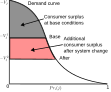
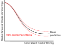

Lecture 5 - Applied Disaggregate Demand Models
ENCI707: Engineering Demand and Policy Analysis
Outline
- Policy Evaluation
- Forecasting & Prediction
- Confidence Intervals on Predictions
- Model transferability & Parameter Updating
Policy Evaluation Using MNL
Policy Evaluations
- Elasticity:
- Direct elasticity
- Cross elasticity
- Consumer surplus & social welfare analysis
- Marginal rate of substitution between two variables (ratio of corresponding parameters) in the choice model:
- Value of Travel Time Savings (VOTTS) in mode choice
- Willingness to pay for improved transit reliability in transit choice
- Willingness to pay for transit accessibility in home location choice
Willingness-to-pay Analysis
- Systematic utility function needs to have cost as a variable \(p\) along with another variable of interest \(x\). \[V_j = V_j(p_j,x_j, \dots) -> p\text{ is a continuous variable & } V_j \text{ is differentiable in x and p}\]
- Assumption: Any changes in \(x\) is balanced by changes in \(p\) to maintain same level of utility: total utility does not change \[V_j = V_j(p_j,x_j, \dots) = V_j((p_j+\delta p_j),(x_j + \delta x_j), \dots)\]
- Using first-order Taylor series expansion \[V_j(p_j,x_j, \dots) = V_j(p_j,x_j, \dots) + \delta p_j \frac{\partial V_j(p_j,x_j, \dots)}{\partial p_j} + \delta x_j \frac{\partial V_j(p_j,x_j, \dots)}{\partial x_j}\]
- After transposing (assuming overall utility change is zero) \[\frac{\delta p_j}{\delta x_j} = - \frac{V_j(p_j, x_j, \dots)/\partial x_j}{V_j(p_j, x_j, \dots)/\partial p_j} \text{; additional price to compensate additional x}\]
Willingness-to-pay Analysis
- For linear-in-parameter utility function \(V_j = \beta_j + \beta_p p_j + \beta_x x_j + \dots\)
- Willing-to-pay for any continuous variable change \(\frac{\partial p_j}{\partial x_j} = - \frac{\beta_x}{\beta_p}\)
- Value of Travel Time Savings (VOTTS): additional amount of money to reduce 1 unit of time \[VOTTS = \frac{\partial p_j}{- \partial t_j} = \frac{\beta_t}{\beta_p}\]
- Value of Reliability (VOR) or Safety (VOS) : additional amount of money to increase 1 level of reliability (r), safety (s) \[VOR = \frac{\partial p_j}{+ \partial r_j} = - \frac{\beta_r}{\beta_p}\text{; } VOS = - \frac{\partial p_j}{+ \partial s_j} = \frac{\beta_s}{\beta_p}\]
Consumer Surplus

\[\Delta CS = \int_{V_j^1}^{V_j^2} Pr_i(j|V_j, V_{k \in C_i, k \neq j}) d V_j = \int_{V_j^1}^{V_j^2} \frac{\exp(\mu V_j)}{\sum_{k \in C_i} \exp(\mu V_k)}d V_j\]
Consumer Surplus
For Changes in only one (independent) alternative (\(j\)): \[\Delta CS = \frac{1}{\mu}\ln\left(\exp(\mu V_j^2) + \sum_{k \in C_i} \exp(\mu V_k)\right) - \frac{1}{\mu}\ln\left(\exp(\mu V_j^1) + \sum_{k \in C_i} \exp(\mu V_k)\right)\] - For changes in multiple alternatives (existence of equal or unequal cross-elasticity, e.g., nested logit, GEV, mixed logit) the integral is path dependent since it becomes conditional upon an income effect - For logit model \[\Delta CS = \frac{1}{\mu}\ln\left(\sum_{j \in C_i} \exp(\mu V_j^2)\right) - \frac{1}{\mu}\ln\left(\sum_{j \in C_i} \exp(\mu V_j^1)\right)\]
Welfare Analysis
- Compensating variation analysis: normalized changes in expected maximum utility of a particular choice before/after any changes (policy/infrastructure): \[U_j = \beta_I(I-p_j) + \sum \beta x + \epsilon_j\]
- where \(I\) = income, \(p_j\) = price/cost, \(\beta_I\) = marginal utility of income = coefficient of income normalized cost
- Consumer surplus (CS): \[CS = \frac{1}{\mu}\left(\ln \sum_j \exp \left(\mu (\beta_I(I-p_j) + \sum \beta x)\right) \right)\]
- Compensting variation (CV) in monetary value: \[CV = \frac{1}{|\beta_I|}\left( CS_{after-change} - CS_{before-change} \right)\]
Forecasting & Prediction Using Disaggregate Choice Models
Applying Disaggregate Model for Forecasting
- Aggregate forecasting \[\sum_{individuals} \text{Individual Behaviour} = \text{Aggregate(collective) Outcome}\]
- Can synthesize people with attributes from census data - i.e., 100% microsimulation with synthetic population
Applying Disaggregate Choice Model for Forecasting
- We do aggregate forecasts, so why do we need disaggregate models?
- Aggregation suppresses information -> misleading information after data aggregation (i.e., Simpson’s Paradox & Ecological Fallacy)
- Statistical inefficiency of aggregate approach
- Although we aggregate the forecast, we can explicitly capture information at individual level
- We can track many sensitive policy issues
- Aggregation of forecast is possible at any level we want, as the model is disaggregate
- Sometimes modelling at disaggregate level makes the model independent of artificial zonal structures and the model may be transferrable
Aggregation Methods for Forecasting
- Microsimulation
- Sample enumeration
- Naïve aggregation
- Classification with naïve aggregation
Microsimulation
| Synthetic Population | Choice Alternatives | ||||
|---|---|---|---|---|---|
| 1 | 2 | … | J | Sum | |
| 1 | \(Pr(1|x_1,\beta)\) | \(Pr(2|x_1,\beta)\) | . | \(Pr(J|x_1,\beta)\) | 1 |
| 2 | \(Pr(1|x_2,\beta)\) | \(Pr(2|x_2,\beta)\) | . | \(Pr(J|x_2,\beta)\) | 1 |
| … | . | . | . | . | . |
| N | \(Pr(1|x_N,\beta)\) | \(Pr(2|x_N,\beta)\) | . | \(Pr(J|x_N,\beta)\) | 1 |
| Sum | N(1) | N(2) | N(J) | N | |
| Market share | N(1)/N | N(2)/N | N(J)/N | 1 | |
Sample Enumeration
- Rather than 100% population, use a representative sample
- If we have a representative sample, \(N_S\), of the target population \(N_T\) then: \[\overset{\sim}{W_i} = \text{Predicted sample share of j} = \frac{1}{N_S}\sum_{s=1}^{N_S} Pr(j|X_S,\beta)\]
| Representative Sample | Choice Alternatives | ||||
|---|---|---|---|---|---|
| 1 | 2 | … | J | Sum | |
| 1 | \(Pr(1|x_1,\beta)\) | \(Pr(2|x_1,\beta)\) | . | \(Pr(J|x_1,\beta)\) | 1 |
| 2 | \(Pr(1|x_2,\beta)\) | \(Pr(2|x_2,\beta)\) | . | \(Pr(J|x_2,\beta)\) | 1 |
| … | . | . | . | . | . |
| N | \(Pr(1|x_S,\beta)\) | \(Pr(2|x_S,\beta)\) | . | \(Pr(J|x_S,\beta)\) | 1 |
| Sum | n(1) | n(2) | n(J) | \(N_S\) | |
| Market share | n(1)/\(N_S\) | n(2)/\(N_S\) | n(J)/\(N_S\) | 1 | |
Sample Enumeration
Although there may be sampling error, the expected value should match the population average
For a ‘G’ stratified sample: \[\overset{\sim}{W_i} = \sum_{g=1}^G \left(\frac{N_g}{N_T}\right) \frac{1}{N_{sg}}\sum_{t=1}^{N_{sg}} Pr(j|X_t,\beta)\]
Here, \(N_g\) is the population in segment \(g\), \(N_{sg}\) is the sample population in segment \(g\), and \(N_T\) is the target population
Sample for estimation should be representative
Sample enumeration can generally be used to test policies in the short-run during which the base population sample can be assumed to remain representative
Naïve Aggregation
- Considering mean value of \(X_t\) as the unique value for whole population gives crude estimate
Population Strata Choice Alternatives 1 2 … J Sum Market share \(Pr(1|x_1,\beta)\) \(Pr(2|x_1,\beta)\) . \(Pr(J|x_1,\beta)\) 1
Classification with Naïve Aggregation
- Classify population into a number of strata and consider population within a particular segment as homogenous (having same attributes)
- When sample enumeration infeasible, can use classification with naïve aggregation
- Categorization is based on attributes / market segmentation
| Population Strata | Choice Alternatives | ||||
|---|---|---|---|---|---|
| 1 | 2 | … | J | Sum | |
| 1 | \(Pr(1|x_1,\beta)\) | \(Pr(2|x_1,\beta)\) | . | \(Pr(J|x_1,\beta)\) | 1 |
| 2 | \(Pr(1|x_2,\beta)\) | \(Pr(2|x_2,\beta)\) | . | \(Pr(J|x_2,\beta)\) | 1 |
| … | . | . | . | . | . |
| n | \(Pr(1|x_S,\beta)\) | \(Pr(2|x_S,\beta)\) | . | \(Pr(J|x_S,\beta)\) | 1 |
| Sum | n(1) | n(2) | n(J) | n | |
| Market share | n(1)/n | n(2)/n | n(J)/n | 1 | |
Confidence Interval on Predictions
Confidence Interval on Predictions
- Estimated parameters are MVN distributed by central limit theorem
- Same approach is applicable for any choice model
Confidence Interval of Predictions: Elasticity, Market Share, & Revenue
Confidence Interval of Predictions: Elasticity, Market Share, Revenue
Confidence Interval of Predictions: Elasticity, Market Share, & Revenue

Sampling & Discrete Choice Models
Sampling
- Sampling of choice makers from population using RP or SP survey:
- Exogenous Sample: Sample share of alternatives are:
- Identical to those of population shares if representative
- Not-identical if not representative
- Endogenous/Choice-based Sample: Respondents are sampled based on observed choices
- Sample share of alternatives are different from those of population shares
- Exogenous Sample: Sample share of alternatives are:
- Sampling of choice alternatives: irrespective of sampling of respondents:
- Choice alternatives are collectively exhaustive
- When choice alternative space is large, then sample alternatives
Sampling of Choice Makers
\[\text{Choice Model: }Pr(j|x,\beta)\]
- Exogenous sampling of choice makers (Stratified Random Sampling)
- Population size, \(N\)
- Stratification of population into total \(G\) groups
- Share (%) individual in a particular group, g in population, \(W_g\)
- Sample size, \(n\)
- Share (%) individual in the particular group, \(g\) in sample, \(w_g\)
- Probability of an individual being selected in the sample, \(q_g = \frac{w_g n}{W_g N}\)
- Sampling probability is not a function of parameter, \(\beta\)
Sampling of Choice Makers
\[\text{Choice Model: }Pr(j|x,\beta)\]
- Exogenous sampling of choice makers (Simple Random Sampling)
- Probability of an individual being selected in the sample, \(q_g = \frac{n}{N}\)
- Sampling probability is not a function of parameter, \(\beta\)
- For representative exogenous sample (stratified/simple random sampling) no correction to choice model estimates is needed
- For non-representative sample, parameters except the Alternative Specific Constants (ASC) do not require correction
- ASC needs to corrected/updated to match actual market share
Sampling of Choice Makers
\[\text{Choice Model: }Pr(j|x(j),\beta)\]
- Endogenous/Choice-based sampling of choice makers (randomly select choice makers of specific choices)
- Selection of respondent of specific choice maker group (e.g. transit users, driver, bicyclists) still should be random in some way
- Choice model with choice-based sample produces unbiased estimates of all parameters except the Alternative Specific Constants (ASC)
- ASCs need to corrected/updated to match actual market share
Sampling of alternatives: Large Choice Set
- Large number of alternatives (e.g., destination location choice model), a random sample of alternatives can be used to estimate the model - where \(C = \text{full choice set}\) and \(G = \text{subset of alternatives drawn from C}\)
- Conditional probability of selecting a subset of alternatives \[q(G|j) > 0 \text{; if G includes the chosen alt. j}\] \[q(G|j) = 0 \text{; if G excludes the chosen alt. j}\]
- Joint probability that \(J\) is drawn with non-zero probability and \(j\) is chosen by an individual \(i\) \[Pr(G,j) = q(G|j)Pr(G) = Pr(j|G)Q(G) \text{; (Bayes Theorem)}\] \[\text{Marginal probability: } Q(G) = \sum_{k \in C} Pr(k)q(G|k) \text{; (Sum over all possible subsets of j')}\]
Sampling of alternatives: Large Choice Set
- Choice probability of alternative \(j\) from subset: \[Pr(j|G)Q(G) = q(G|j)Pr(j)\] \[Pr(j|G)Q(G) = \frac{Pr(j)q(G|j)}{Q(G)} = \frac{Pr(j)q(G|j)}{\sum_{k \in C} Pr(k)q(G|k)} = \frac{\exp(V_j)q(G|j)}{\sum_{k \in C} \exp(V_k)q(G|k)}\]
- For any subset, \(q\), that does not include \(k\), \(q(G|k)=0\), so: \[Pr(j|G) = \frac{\exp(V_j)q(G|j)}{\sum_{k \in G} \exp(V_k)q(G|k)} \text{; within C, any G without k drops out}\] \[Pr(j|G) = \frac{\exp(V_j)\exp(\ln(q(G|j)))}{\sum_{k \in G} \exp(V_k)\exp(\ln(q(G|j)))} = \frac{\exp(V_j + \ln(q(G|j)))}{\sum_{k \in G} \exp(V_k + \ln(q(G|j)))}\]
Sampling of alternatives: Large Choice Set
- Choice model with sampling from the alternatives: \[Pr(j|G) = \frac{\exp(V_j + ln(q(G|j)))}{\sum_{k \in G} \exp(V_k + ln(q(G|k)))} \text{; } q(G|j) = \prod_{l=1}^{G-1}Pr(l)\]
- where \(Pr(l)\) is the binary probability of drawing a choice
- Under simple random sampling, samples are drawn uniformly with equal probability
- This makes the additional \(ln(q(G|j))\) redundant (same for all alternative and so drops out: uniform conditional property) - MNL result becomes standard form
- Not true for other models such as nested logit, GEV, or mixed logit
Managing Large Choice Sets
- Reducing alternatives:
- Use various feasibility constraints to reduce number of alternatives
- Random sampling from large choice set
- Wrong choice set may generate distorted predictions
Transferability and Updating Model Parameters: MNL
Model Transferability
- Transferability issues:
- Systematic bias.
- Local conditions.
- Model Updating Issues:
- Systematic bias of the model is captured by model constants. - Alternative Specific Constants (ASC) are error basket - At a minimum level, the constant terms change from place-to-place
- Scale parameter of random error term changes from place-to-place
- Model specification changes from place-to-place
Updating MNL Model Parameters
- MNL predictions matches the market shares of sample data used to estimate the model parameter
- Updating ASC of MNL for matching population shares if those are different (if the sample is not representative or model is transferred to a different spatial/temporal context) in sample share:
- Iterative ASC adjustment for the utility functions of the choice alternatives (including the based alternative for which the ASC is estimated to be 0) \[𝐴𝑆𝐶_{𝑢𝑝𝑑𝑎𝑡𝑒𝑑, j} = 𝐴𝑆𝐶_{𝑡𝑜−𝑏𝑒−𝑎𝑑𝑗𝑢𝑠𝑡𝑒𝑑, j} + \ln\left(\frac{\text{actual market share, j}}{\text{predicted market share, j}} \right) \]
Updating MNL Model Parameters
- Population market share of \(𝑗= 𝐻_𝑗\)
- Sample share of \(j = h_j\)
- Adjustment proprtion of \(j = s_j - \frac{H_j}{h_j}\)
- Adjusted choice probability \(Pr(j) = \frac{s_j \exp(\beta_{0,j}+\sum \beta x)}{\sum_k s_k \exp(\beta_{0,k}+\sum \beta x)}\) \[Pr(j) = \frac{\exp(\beta_{0,j}+\sum \beta x + \ln(s_j))}{\sum_k \exp(\beta_{0,k}+\sum \beta x + \ln(s_k))} = \frac{\exp(\beta_{0,j}+\sum \beta x + \ln(H_j/h_j))}{\sum_k \exp(\beta_{0,k}+\sum \beta x + \ln(H_k/h_k))}\] \[\text{Updated } \beta_{0,j} = (\beta_{0,j})_{estimated} + ln(H_j/h_j)\]
Further topics (among many others)
- Logit model with probabilistic choice set formation
- Logit model with multiple overlapping choice sets
- Logit model with myopic preferences regarding specific alternatives